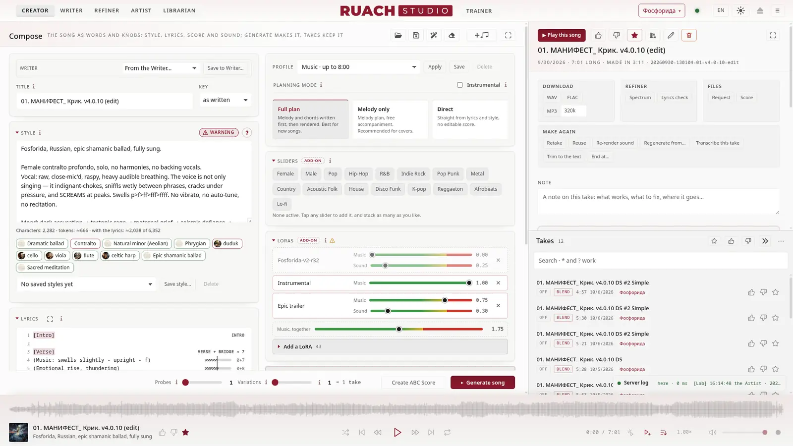
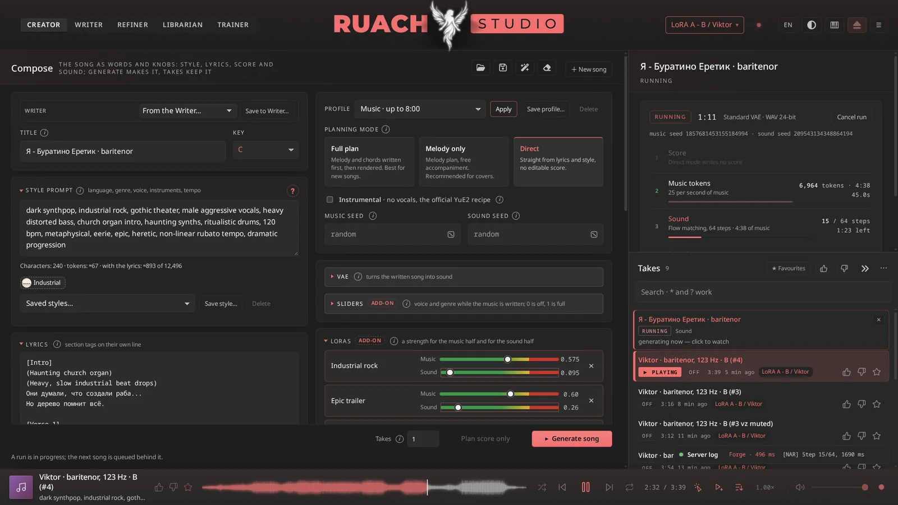
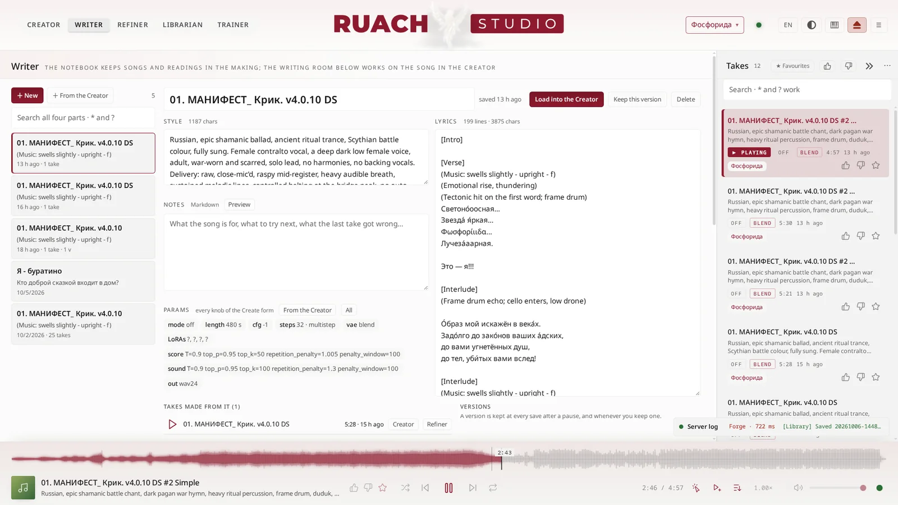
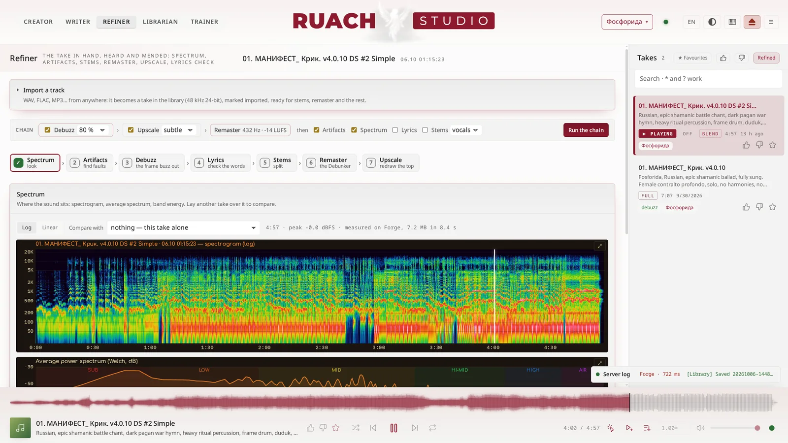
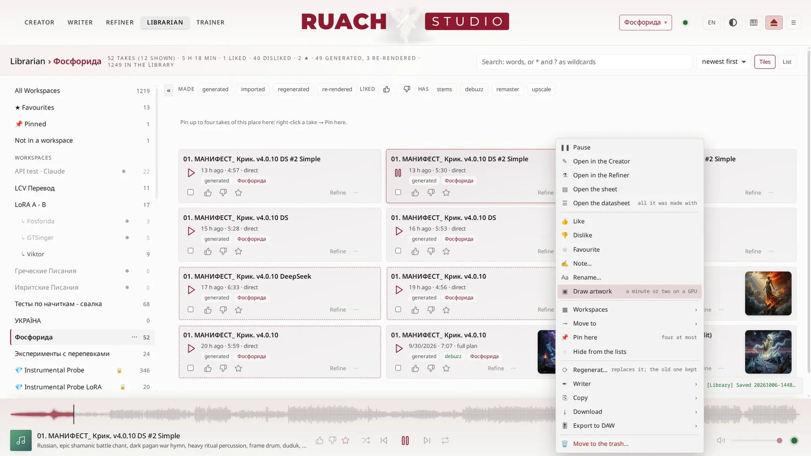
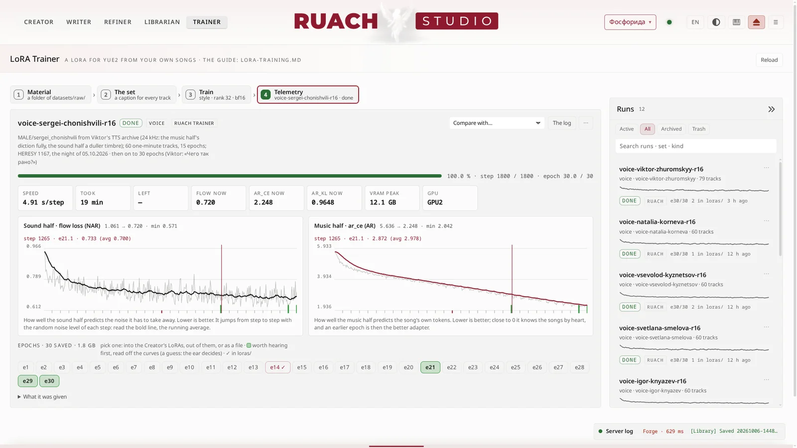
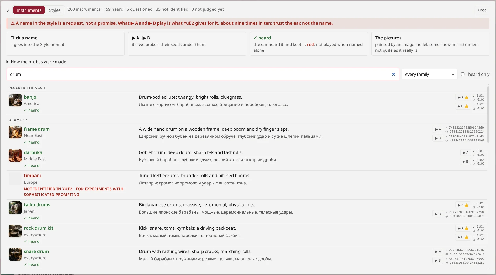
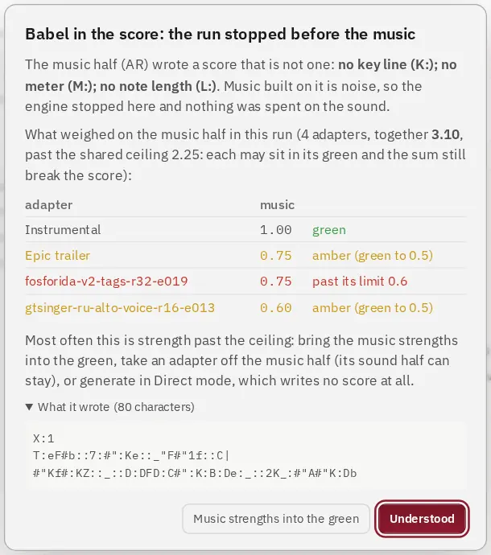
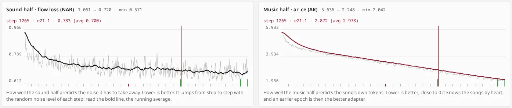

Creatore
Stile, testo, modalità di pianificazione, decoder, slider, LoRA su una strada dal verde al rosso; il take con la sua partitura, i suoi semi e tutto ciò che serve per rifarlo.
Un intero studio attorno a YuE2, il modello aperto di canzoni. Scrivi lo stile e il testo, e lo studio compone, canta e rende la canzone sulla tua GPU. Le tue canzoni, parole e impostazioni non la lasciano mai.
2.0.0-rc1 · la prima release candidate · ottobre 2026

Il Creatore fa la canzone, lo Scrittore la scrive con un modello di chat, il Rifinitore la finisce, il Bibliotecario conserva ogni take e l'Addestratore LoRA insegna a YuE2 le tue canzoni. Dentro lo studio c'è una guida per ogni stanza.
Stile, testo, modalità di pianificazione, decoder, slider, LoRA su una strada dal verde al rosso; il take con la sua partitura, i suoi semi e tutto ciò che serve per rifarlo.

Canzoni come documenti con versioni, profili di testo e un tuo modello di chat (o OpenRouter) che abbozza e rivede con te.

Spettro, artefatti, antironzio, una verifica del testo con Whisper, stem, remaster, upscale; una catena li esegue tutti.

Ogni take negli spazi: cercato, votato, annotato, bloccato, con copertina, mandato alla tua DAW; un cestino che restituisce.

Adattatori dalle tue canzoni: il set, l'addestramento, le curve di entrambe le metà spiegate, le epoche da ascoltare per prime.

200 strumenti provati e giudicati a orecchio: cosa suona davvero YuE2, cosa suona debole e cosa non conosce.
Non l'ennesimo involucro di un modello: una stazione di lavoro attorno al modello, aperta fino all'osso, ogni modifica numerata e documentata.

Quando la metà musicale scrive una partitura rotta (succede con adattatori spinti troppo in là), il motore ferma l'esecuzione prima che ci si costruisca sopra della musica, in pochi secondi, e dice perché: quali adattatori, quanto oltre i loro limiti, cosa è stato scritto.
Le intensità stanno su strade misurate; gli adattatori sovrapposti condividono un tetto misurato.

Lo studio addestra da sé gli adattatori, su pesi bf16 non quantizzati. Rispetto ad AI-Toolkit di Ostris sullo stesso set, la loss della metà musicale coincide epoca per epoca entro 0.015.
Rank 16 su 148 canzoni: 2.1 s a passo in 12 GB. Rank 32 su 42 canzoni intere: 6.7 s a passo in 18 GB.
Ogni settimana un video dice che qualche modello uccide SUNO. Questo non è un modello: è una stazione di lavoro attorno a uno. Ecco dove vince e dove no (non ancora).
| Ruach Studio (YuE2) | SUNO | |
|---|---|---|
| dove gira | sulla tua GPU; le tue canzoni non la lasciano mai | nel loro cloud |
| quanto costa | l'elettricità | un abbonamento e dei crediti |
| la partitura | scritta per prima, visibile, modificabile, tua (ABC, MIDI) | nascosta |
| ripetere un take | esattamente: due semi che conservi | no |
| il tuo suono | addestra una LoRA sulle tue canzoni, nello studio | nessun addestramento |
| dopo il render | stem, antironzio, remaster, upscale, verifica del testo, tutto in locale | stem, nel cloud |
| in una DAW | un progetto REAPER con la partitura, le sezioni e il testo (sperimentale) | stem audio |
| il codice | aperto, ogni modifica documentata | chiuso |
| rifinitura pronta all'uso | meno: un mix può ronzare (l'antironzio aiuta), il testo può scivolare (la verifica del testo trova dove), alcuni strumenti YuE2 li suona deboli o non li suona affatto (una LoRA li insegna) | più |
| cosa serve | una GPU NVIDIA (24 GB per tutto a piena precisione), Linux, circa 120 GB di disco per i modelli, le LoRA e gli spazi | un browser |
fetch-models.sh), le LoRA e gli spaziLa 2.0.0-rc1 è lo studio in cui facciamo le nostre canzoni ogni giorno. Questi sono i pezzi più grandi in arrivo, per la rc2 e oltre.
Viktor Zhuromskyy, the author of Ruach Studio, does not publish it for the hype. He made it for himself. After more than half a year of struggling with Suno on paid plans, and of searching for a model worth working with (ACE-Step, MiniMax and others), he set out to build an audio studio of his own, on his own machine. He settled on YuE2: of all the open models, it is the best value and the most refined.
He did not knock the studio together just to have something that runs. He built it his own way, because his work is his own: his translations, his interlinear texts and much more. He fit into it as much as he could, polished the interface as far as he could, and made working with it not poking and clicking among crutches and potholes, but as productive as it can be.
That is the whole story. Now the studio is yours as well.
Виктор Журомский, автор Ruach Studio, публикует её не ради хайпа. Он делал её для себя. После более чем полугода мучений с Suno на платных тарифах и поисков достойной модели (ACE-Step, MiniMax и другие) он взялся построить собственную аудиостудию, на своей машине. Выбор пал на YuE2: из всех открытых моделей она самая рентабельная и самая изысканная.
Студию он делал не тяп-ляп, лишь бы работало, а в своём стиле, потому что и работа у него своя: собственные переводы, подстрочники и многое другое. Он постарался вместить в неё максимум, отполировать интерфейс до блеска и сделать работу со студией не тыканьем и кликаньем среди костылей и ям, а по-настоящему продуктивной.
Вот и вся история. Теперь эта студия и ваша.
Віктор Журомський, автор Ruach Studio, публікує її не заради хайпу. Він робив її для себе. Після понад пів року мук із Suno на платних тарифах і пошуків гідної моделі (ACE-Step, MiniMax та інші) він узявся збудувати власну аудіостудію, на своїй машині. Вибір упав на YuE2: з усіх відкритих моделей вона найвигідніша й найвишуканіша.
Студію він робив не абияк, аби лиш працювало, а у своєму стилі, бо й робота в нього своя: власні переклади, підрядники та багато іншого. Він намагався вмістити в неї максимум, відшліфувати інтерфейс до блиску й зробити роботу зі студією не тицянням і клацанням серед милиць і ям, а справді продуктивною.
Ось і вся історія. Тепер ця студія і ваша.
Віктар Журомскі, аўтар Ruach Studio, публікуе яе не дзеля хайпу. Ён рабіў яе для сябе. Пасля больш як паўгода пакут з Suno на платных тарыфах і пошукаў годнай мадэлі (ACE-Step, MiniMax і іншыя) ён узяўся пабудаваць уласную аўдыястудыю, на сваёй машыне. Выбар упаў на YuE2: з усіх адкрытых мадэляў яна самая выгадная і самая вытанчаная.
Студыю ён рабіў не абы-як, абы працавала, а ў сваім стылі, бо і праца ў яго свая: уласныя пераклады, падрадкоўнікі і шмат іншага. Ён стараўся змясціць у яе максімум, адшліфаваць інтэрфейс да бляску і зрабіць працу са студыяй не тыцканнем і клікамі сярод мыліц і ям, а сапраўды прадуктыўнай.
Вось і ўся гісторыя. Цяпер гэтая студыя і ваша.
Ο Viktor Zhuromskyy, ο δημιουργός του Ruach Studio, δεν το δημοσιεύει για εντυπωσιασμό. Το έφτιαξε για τον εαυτό του. Ύστερα από περισσότερους από έξι μήνες ταλαιπωρίας με το Suno σε πληρωμένα πακέτα, και αναζήτησης ενός μοντέλου που να αξίζει (ACE-Step, MiniMax και άλλα), αποφάσισε να φτιάξει ένα δικό του στούντιο ήχου, στο δικό του μηχάνημα. Κατέληξε στο YuE2: από όλα τα ανοιχτά μοντέλα είναι το πιο συμφέρον και το πιο εκλεπτυσμένο.
Δεν έστησε το στούντιο πρόχειρα, απλώς για να δουλεύει. Το έφτιαξε με το δικό του ύφος, γιατί και η δουλειά του είναι δική του: οι μεταφράσεις του, τα διάστιχα κείμενά του και πολλά άλλα. Προσπάθησε να χωρέσει σε αυτό όσο περισσότερα γινόταν, να γυαλίσει το περιβάλλον εργασίας ως την τελευταία λεπτομέρεια και να κάνει τη δουλειά μαζί του όχι άσκοπα κλικ ανάμεσα σε δεκανίκια και λακκούβες, αλλά κάτι πραγματικά παραγωγικό.
Αυτή είναι όλη η ιστορία. Τώρα το στούντιο είναι και δικό σας.
Viktor Zhuromskyy, el autor de Ruach Studio, no lo publica para llamar la atención. Lo hizo para sí mismo. Tras más de medio año de sufrir con Suno en planes de pago y de buscar un modelo que mereciera la pena (ACE-Step, MiniMax y otros), se propuso construir su propio estudio de audio, en su propia máquina. Se quedó con YuE2: de todos los modelos abiertos, es el más rentable y el más refinado.
No montó el estudio de cualquier manera, solo para que funcionara. Lo hizo a su estilo, porque su trabajo también es suyo: sus traducciones, sus textos interlineales y mucho más. Procuró meter en él todo lo posible, pulir la interfaz hasta el último detalle y hacer que trabajar con el estudio no sea dar clics a ciegas entre muletas y baches, sino algo de verdad productivo.
Esa es toda la historia. Ahora el estudio también es tuyo.
Viktor Zhuromskyy, l'autore di Ruach Studio, non lo pubblica per fare clamore. Lo ha costruito per sé. Dopo più di sei mesi di tormenti con Suno sui piani a pagamento, e di ricerche di un modello all'altezza (ACE-Step, MiniMax e altri), ha deciso di crearsi uno studio audio tutto suo, sulla sua macchina. La scelta è caduta su YuE2: fra tutti i modelli aperti è il più conveniente e il più raffinato.
Non ha messo insieme lo studio alla buona, giusto perché funzionasse. Lo ha fatto a modo suo, perché anche il suo lavoro è suo: le sue traduzioni, i suoi testi interlineari e molto altro. Ha cercato di farci stare il massimo, di rifinire l'interfaccia fino all'ultimo dettaglio e di rendere il lavoro con lo studio non un cliccare a vuoto tra stampelle e buche, ma qualcosa di davvero produttivo.
Questa è tutta la storia. Ora lo studio è anche tuo.